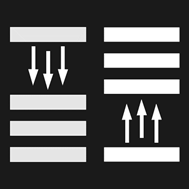

4. Обязанности пешеходов
изменения от 8 апреля 2020
4.1. Пешеходы должны двигаться по тротуарам, пешеходным дорожкам, велопешеходным дорожкам, а при их отсутствии - по обочинам. Пешеходы, перевозящие или переносящие громоздкие предметы, а также лица, передвигающиеся в инвалидных колясках, могут двигаться по краю проезжей части, если их движение по тротуарам или обочинам создает помехи для других пешеходов.
При отсутствии тротуаров, пешеходных дорожек, велопешеходных дорожек или обочин, а также в случае невозможности двигаться по ним пешеходы могут двигаться по велосипедной дорожке или идти в один ряд по краю проезжей части (на дорогах с разделительной полосой - по внешнему краю проезжей части).
При движении по краю проезжей части пешеходы должны идти навстречу движению транспортных средств. Лица, передвигающиеся в инвалидных колясках, ведущие мотоцикл, мопед, велосипед, в этих случаях должны следовать по ходу движения транспортных средств.
При переходе дороги и движении по обочинам или краю проезжей части в темное время суток или в условиях недостаточной видимости пешеходам рекомендуется, а вне населенных пунктов пешеходы обязаны иметь при себе предметы со световозвращающими элементами и обеспечивать видимость этих предметов водителями транспортных средств.
4.2. Движение организованных пеших колонн по проезжей части разрешается только по направлению движения транспортных средств по правой стороне не более чем по четыре человека в ряд. Спереди и сзади колонны с левой стороны должны находиться сопровождающие с красными флажками, а в темное время суток и в условиях недостаточной видимости - с включенными фонарями: спереди - белого цвета, сзади - красного.
Группы детей разрешается водить только по тротуарам и пешеходным дорожкам, а при их отсутствии - и по обочинам, но лишь в светлое время суток и только в сопровождении взрослых.
4.3. Пешеходы должны переходить дорогу по пешеходным переходам, в том числе по подземным и надземным, а при их отсутствии - на перекрестках по линии тротуаров или обочин.
На регулируемом перекрестке допускается переходить проезжую часть между противоположными углами перекрестка (по диагонали) только при наличии разметки 1.14.1 или 1.14.2 , обозначающей такой пешеходный переход.
При отсутствии в зоне видимости перехода или перекрестка разрешается переходить дорогу под прямым углом к краю проезжей части на участках без разделительной полосы и ограждений там, где она хорошо просматривается в обе стороны.
Требования настоящего пункта не распространяются на велосипедные зоны.
Разметка 1.14.1

Разметка 1.14.2
4.4. В местах, где движение регулируется, пешеходы должны руководствоваться сигналами регулировщика или пешеходного светофора, а при его отсутствии - транспортного светофора.
4.5. На нерегулируемых пешеходных переходах пешеходы могут выходить на проезжую часть (трамвайные пути) после того, как оценят расстояние до приближающихся транспортных средств, их скорость и убедятся, что переход будет для них безопасен. При переходе дороги вне пешеходного перехода пешеходы, кроме того, не должны создавать помех для движения транспортных средств и выходить из-за стоящего транспортного средства или иного препятствия, ограничивающего обзорность, не убедившись в отсутствии приближающихся транспортных средств.
4.6. Выйдя на проезжую часть (трамвайные пути), пешеходы не должны задерживаться или останавливаться, если это не связано с обеспечением безопасности движения. Пешеходы, не успевшие закончить переход, должны остановиться на островке безопасности или на линии, разделяющей транспортные потоки противоположных направлений. Продолжать переход можно лишь убедившись в безопасности дальнейшего движения и с учетом сигнала светофора (регулировщика).
4.7. При приближении транспортных средств с включенным проблесковым маячком синего цвета (синего и красного цветов) и специальным звуковым сигналом пешеходы обязаны воздержаться от перехода дороги, а пешеходы, находящиеся на проезжей части (трамвайных путях), должны незамедлительно освободить проезжую часть (трамвайные пути).
4.8. Ожидать маршрутное транспортное средство и такси разрешается только на приподнятых над проезжей частью посадочных площадках, а при их отсутствии - на тротуаре или обочине. В местах остановок маршрутных транспортных средств, не оборудованных приподнятыми посадочными площадками, разрешается выходить на проезжую часть для посадки в транспортное средство лишь после его остановки. После высадки необходимо, не задерживаясь, освободить проезжую часть.
При движении через проезжую часть к месту остановки маршрутного транспортного средства или от него пешеходы должны руководствоваться требованиями пунктов 4.4 - 4.7 Правил.